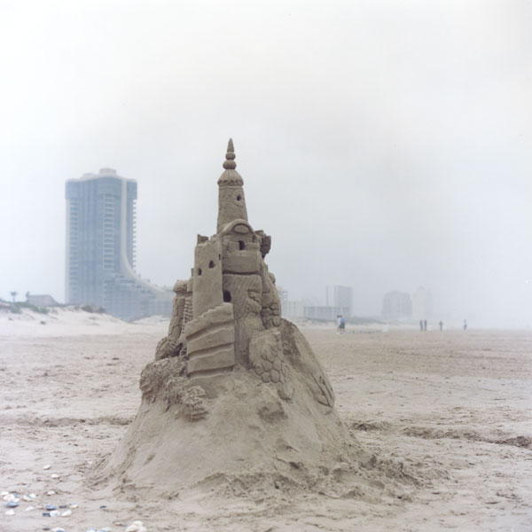
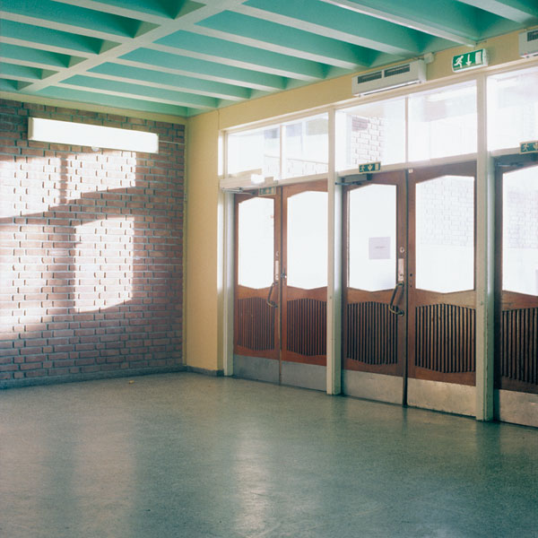

|
 Lonestar (South Padre Island, Texas) (2006) >>>
In this photo series I investigate the holiday, and its concept of escaping the everyday. The images were shot at a typical vacation-spot; a small town bursting with people during high-season, but vacant and desolate otherwise. During low-season the place actually seem to offer that emptiness and isolation many seek as part of the holiday experience. This is also when the true nature of the place is more immediately present.
The pictures were shot one week before “spring-brake” which marks the beginning of the season, but currently the place still seems vacant and silent, and offers a sort of dreamy melancholiae. This melancholiae derives from the nature of these small holiday-towns. Its local nature can be hard to grip; during high-season it is invisible in the crowdednes, and during the low-season the dominating sensation is a lack of presence.
|
 The opera (2006) >>> The opera (2006) >>>
First building the Nation, then hitting puberty....
Folketeaterbygningen” in Oslo is a symbol of an era in Norwegian history. Built during the 30 and 50’ties it represents the norwegian social democracy coming into being. More specifically it was built to provide a theater for the workers (Labour Union). After 4 years the theater went bankrupt, and the Opera moved in, staying until today. Now, with a new opera-house rising in Bjørvika, the building was sold to a private entrepreneur. Meanwhile, the new Bjørvika-project seems to reflect the nation in a different era. With the opera-building facing the water-side it is greeting visitors arriving Oslo by shore. Hitting puberty, the social democracy of Norway is turning self conscious; preoccupied with creating it’s image. By photographing “Folketeaterbygningen” in a sober documentary fashion, as if the building were brand new, I am hoping the project will reflect on both the fading ideological heritage, as well as point to the ideology behind current public projects like the new opera-house in Oslo.
|
 Marienlyst school (2001) >>>
Katja Høst’s series Marienlyst skole (Marienlyst School) (2000) presents the artist’s childhood school, its rooms, emptied by the summer recess, bathed in sunlight. Although this may sound like a recipe for a sentimental journey back in time, it is in fact a stringent analysis of social-democratic institutional architecture. Høst photographs the school in a classic manner, emphasising light and functionality, almost as if the building were new and she were documenting it for an architecture journal. The series thus becomes a commentary on postwar Nordic social ideology and the ambivalent mixture of freedom and control that forms the heart of this heritage.
(Jonas Ekeberg, Director of Preus Museum, in “Om fotografi”, Journal for Preus Museum, 2005.)
|
|